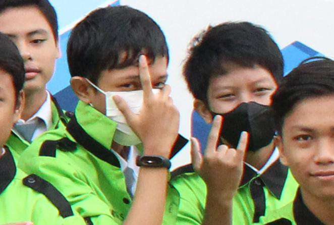

Tentang Saya
Halo, nama saya Isaiah Tino Surya Saputra. Saya berumur 16 tahun dan saya bersekolah di SMKN 2 Surakarta.
Sesuai di frame Skill, Pengalaman, dan sertifikat, saya mempunyai minat dan bakat di bidang pemrograman.
Saya mempunyai pengalaman membuat website dengan HTML, CSS, dan Javascript(sedikit).
